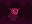
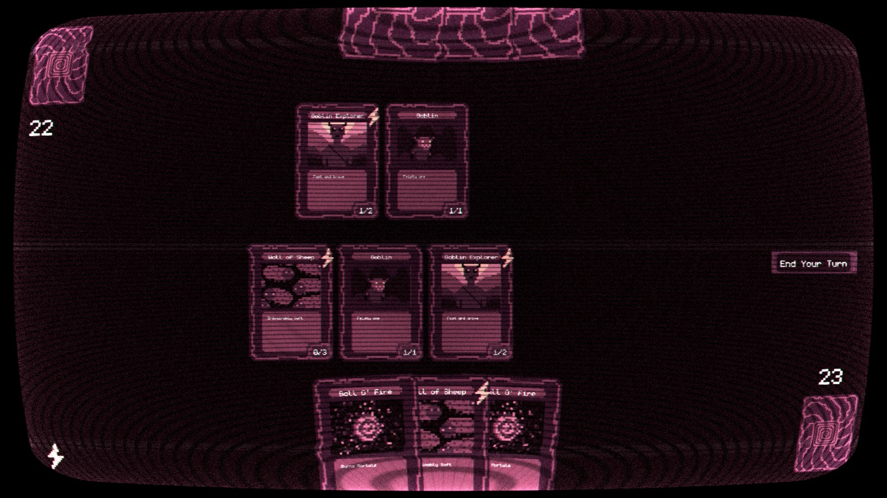

CameronDugan.com
Stats -> In 1 minute you can read this article with 295 words
Wizard Workshop
Progress announcement for my card game
The idea is to create an interesting automated card game experience. Title is placeholder for now. But here are some assets that I've created for this
An unlock for cloning.
A goblin hiding in a cave.

An impenetrable wall of sheep.
And this is a preview of what I have coded for the game so far.

In the beginning you will play the game like any other card game, but as you go further and further, you will realize that the necessity for automation grows too strong. You will be able to influence how your deck is automatically played, and you will get rewards for when your deck does well. May the best wizard win.
A lot of groundwork has been laid out in ways that allow future development to be easier. Using the pieces of the game engine as intended and keeping things modular should help things stay organized. If you are interested in seeing more of this game as it is developed, feel free to shoot me an email. I love hearing back from the community about what I write.
I want your craziest card ideas!